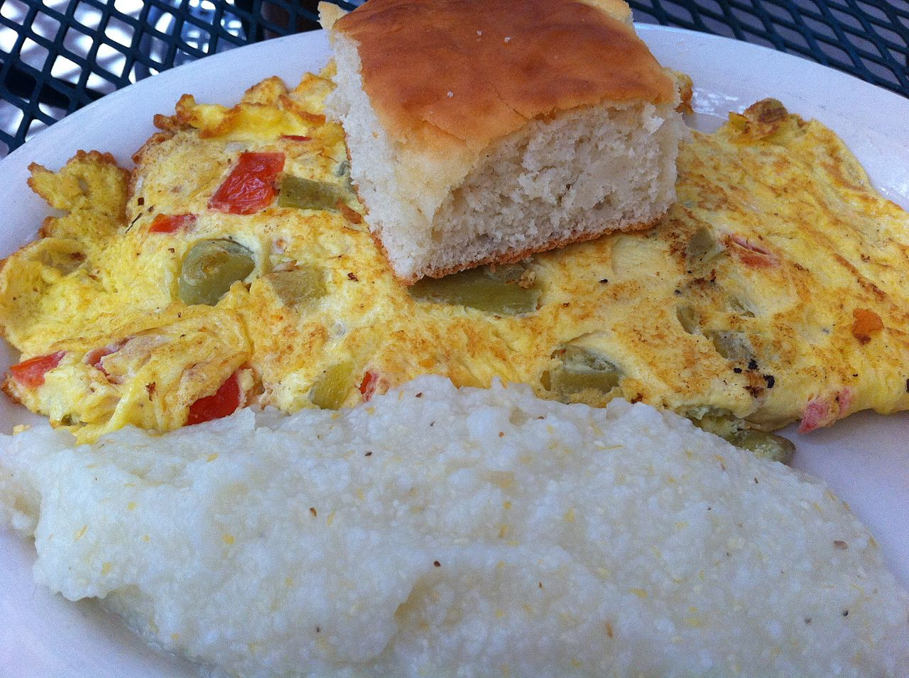

| drinks | main course | sweets |
 |
 |  |
It is commonly said that breakfast is the most important meal of the day, and at Toot ‘N’ Tell It breakfast is served from 5:30 A.M.-10:00 A.M. We make sure to give you a wide variety of breakfast options to choose from. To find out what you would like to order, just click on one of the pictures above. If you are looking for a delicious omelet or just some grits we have what you want here.